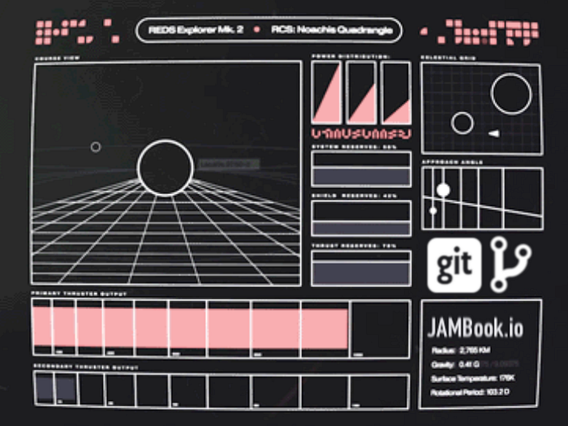

Writing on GitHub 3
Originally published at https://justiceconder.medium.com/writing-on-github-3-342aeafbe40d

In my previous posts in this series, I talked about the motivation and the rationale behind using GitHub as a backend for writing. To summarize the motivation, consider the following:
- GitHub represents a familiar and cloud-based interface
- GitHub has precise collaboration mechanisms
- This approach is consistent with the increasingly integrated relationship between content and code
- Mechanisms for the precise measurement of contribution and editorial changes are in place
To add to all this, I read several books last year that profoundly impacted my view of how important habits are. Between Deep Work, Atomic Habits, and The Compound Effect, I set out to rework my entire schedule prioritizing blocks of time to invest in very specific habits being convinced of this:
You do not rise to the level of your goals. You fell to the level of your systems. — James Clear, Atomic Habits
This meant really nailing down a daily habit of writing. Like so many others I’ve talked about and tried to write articles and books on a regular basis and have consistently fallen short. I was really hoping that Github’s commit-graph would be the start of me locking in a more consistent pattern that’s in my face every day. While I was originally content with that graph to track my writing, it became pretty obvious that I needed something more refined because that commit-graph makes no distinction between a commit of a thousand words or one.
So GitHub Actions came to the rescue. Actions are basically GitHub’s offering for a Serverless/FaaS. This is code that gets triggered by specific git actions. While primarily designed to provide CI/CD type solutions, it can be leveraged for anything your imagination can dream up. So to leverage this I put out a bounty to have a script written that did a word count every time I committed new content and stored that in a JSON file in the project. After having that file, the next step was to have a simple interface built that gave an easily digestible visual indication on whether I was meeting my daily writing goals. The result of all of this was JAMBook.io
While it lacks many potential nifty and significant features, it does accomplish my original intention and acts as a proof of concept behind my thinking on this entire subject. After going through many variations and experiments on the setup in my previous blog posts, I feel that I’ve landed in a comfortable setup.
- I can write in the browser or locally using any local tools
- Voice dictation (in browser)
- Grammarly support (in browser)
- Rich Text editing (in browser)
- A configurable daily writing and document length goal
- And all of this can be easily duplicated for free and publicly deployed using Netlify
Admittedly, in some respects, this is a trivial “application”. But for me, it represents something consistent with a larger significant trend. You could call it a shift-left of human activity. Description and code are collapsing in the form of smart contracts. Organizations are increasingly being operated by the execution of formal rules with DAO’s. A consequence of this is that everything is collapsing down into where code lives and that’s source control and the most popular source control is git, thus giving rise to GitOps.
There’s been an extreme uptick in interest in chatter around computational essays and executable notebooks. More and more rigorous publications are expected to be executable in some fashion. Cutting edge thinkers are predicting the obsolescence of the traditional research paper. Even traditional product requirements documents are collapsing down into source control via Readme Driven Development. It’s all part of the canalization of digital science or the oft-repeated saying that “software is eating the world”.
So what are the next steps? For me, I need to shift away from working on JAMBook to regularly leveraging it as the tracking tool it was always intended to be. There are several writing goals I’ve made that I intend on hitting over the next few months. If the JAMBook turns out to be nothing more than a useful utility for my own habits it will have provided tremendous value. If it does garner interest in the meantime and people find it to be useful, that would be great and it would be pretty exciting to see the other pending features added, making it a potentially versatile and inexpensive approach to content management and monetization. If you are interested in contributing or have any ideas on new possible features or directions, please reach out or feel free to contribute directly.
50
50